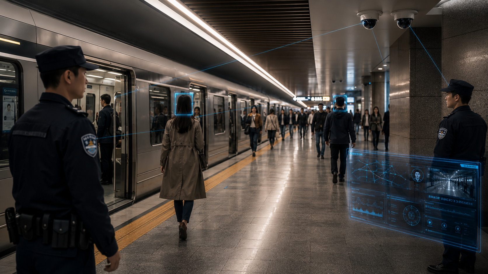
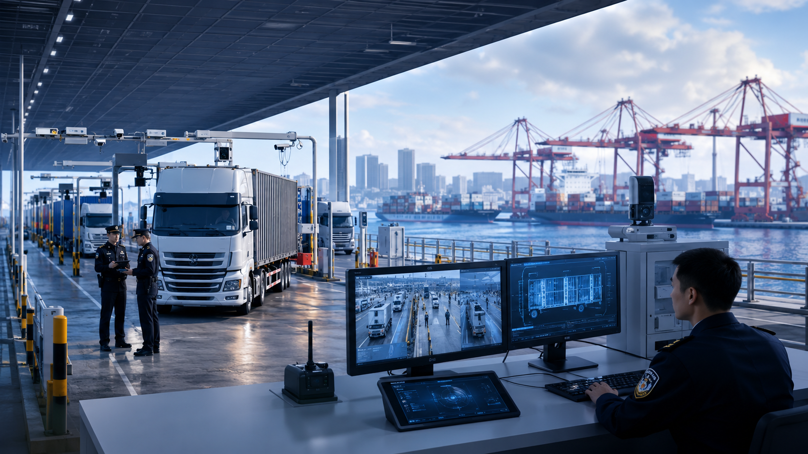
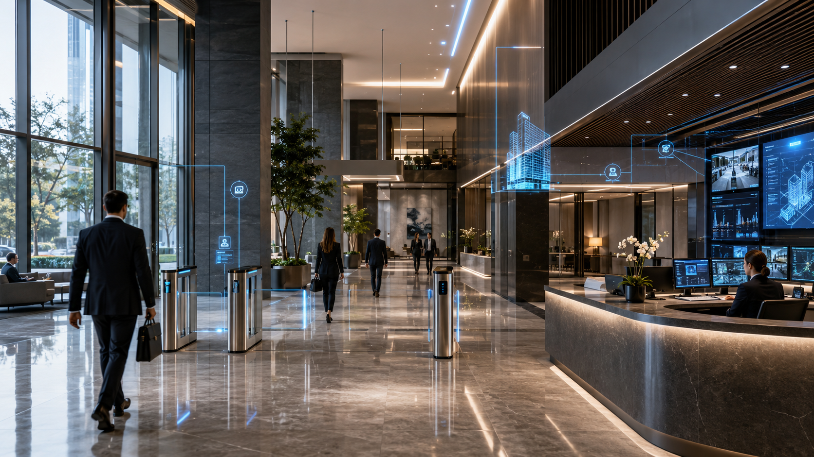
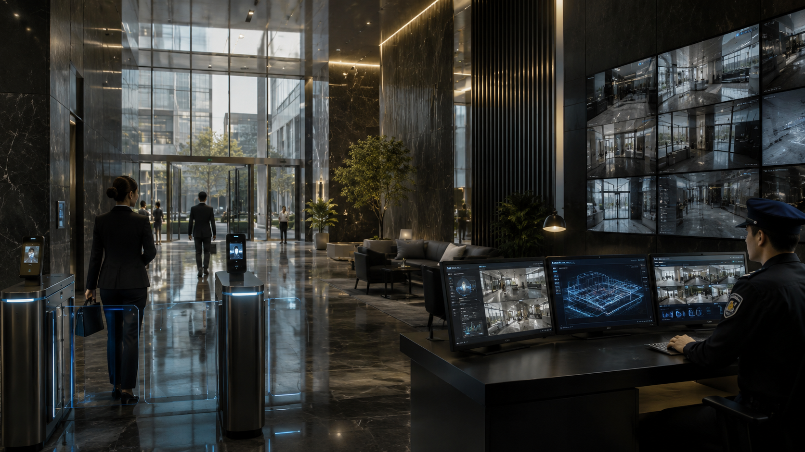
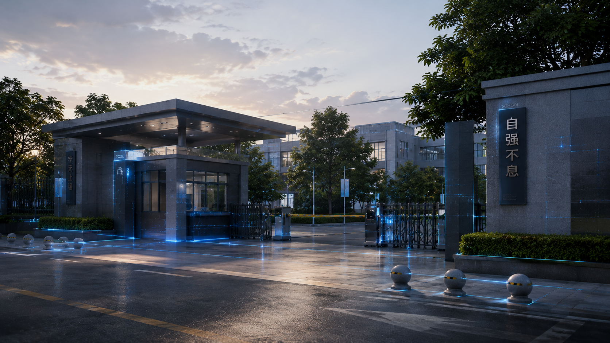
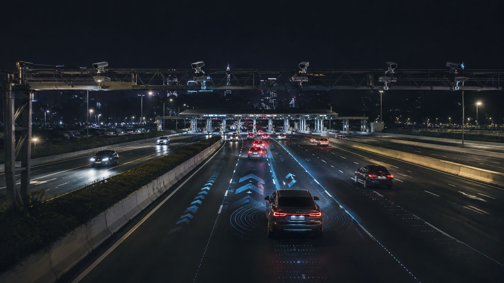

公共安全
轨道公安
华南某超大城市地铁率先实现大小模型结合的公共场所智能视频巡防，空间智能体主动感知，事件止于未发。
70%有效告警率提升
93%新任务提效
14 城规模化落地
秒级异常事件识别
自主研发面向物理世界运营治理的空间智能体
对物理空间进行 7×24 小时异常感知，自动完成「感知—认知—决策—执行—进化」全闭环，让空间具备自运营能力。
从“增量开发”进入“存量运营”，效率重构需求强烈，空间运营正在从人力密度转向算法密度。
用算法密度，替代人力密度。 传统视觉 AI 不懂常识、没有执行力，这不是算法精度问题，而是代际能力断层。
同一套空间智能体能力，按岗位封装为可部署、可考核、可复制的 AI 员工。
7×24 全时监控，秒级识别异常事件，全域摄像头智能巡防，自动生成告警工单。

事件分类、自动派单、物料分拨、全流程跟踪闭环，自动匹配最优处置。

远程监控设备机房，预测性维护，让设备运维从事后抢修变成事前预防。

| 行业 | 场景覆盖 | AI 员工组合 |
|---|---|---|
| 智慧交通 | 轨道交通 · 交通枢纽 · 高速·低空 | AI 安全员 + AI 调度员 + AI 设备管家 |
| 公共安全 | 轨道公安 · 口岸边检 | AI 安全员 + AI 调度员 |
| 智慧园区物业 | 住宅 · 商业 · 写字楼 · 产业园 | AI 安全员 + AI 设备管家 + AI 调度员 |
| 公共服务 | 机关 · 医院 · 学校 | AI 安全员 + AI 调度员 |
同一套空间智能体能力，面向不同场景配置 AI 安全员、AI 调度员与 AI 设备管家。
率先实现大小模型结合的公共场所智能视频巡防，让海量存量视频从被动回看转化为主动线索。
面向高安全、高效率场景，构建可持续的主动发现、风险研判和闭环处置能力。
把巡检、安全、设备、调度等低价值重复劳动交给 AI 员工，沉淀可跨项目复制的运营能力。
已服务 3,000+ 空间。联系我们，聊聊空间智能体如何在你的场景里完成持续感知、响应和闭环。
不是又一套管理软件的升级，也不是若干视频算法的叠加，而是面向物理空间运营的智能系统——
让运营能力不再绑定于具体的人，而是沉淀进一个可感知、可认知、可决策、可执行、可进化的系统之中。
空间智能体不是“看见问题”的系统，而是五环闭环的运营系统。感知与执行是行业入场券，认知、决策、进化才是真正的护城河。
基于星辰、星瀚、磐石三大系统，构建感知、认知、决策、执行一体化的能力底座，支撑空间智能体在各类场景中自主闭环运行。
护城河不在底层算力，而在行业认知与决策能力的深度闭环：星辰 + 星瀚 + 磐石 三大系统协同融合。
空间智能体不是单一算法，而是将“看见、看懂、决策、行动、进化”串联起来的完整系统。
把摄像头、传感器、门禁、消防、业务系统等多源数据融合进同一个时空坐标系，让空间“看得全、看得懂”。
理解事件起因、演进与后果，并据此研判风险、拆解任务，把异常转化为可执行的处置路径。
联动门禁、设备、广播、工单、机器人等执行资源完成现场处置，并在每次真实运行中不断优化。
这是行业正在发生的演进方向，也是北斗持续投入的目标。我们同时提供项目交付与智能体订阅两种形态，让能力随客户阶段平滑升级。
空间智能体 = 部署在物理空间中，能持续感知、认知、独立决策、闭环执行，并不断进化的 AI 系统。
从底层的磐石算力矩阵，到中层的星辰 + 星瀚双引擎，到上层的空间智能体运行实例，再到面向客户的 AI 员工——四层既是递进的能力体系，也能按需单层落地。
先了解空间智能体 →
云边协同的高性价比国产算力底座，支撑空间智能能力可部署、可运维、可复制、低成本规模化落地
| 系列 | 定位 |
|---|---|
| 磐石 H 系列 | 鸿蒙物联系列 |
| 磐石 E 系列 | 国产边缘算力 |
| 磐石 L 系列 | 大模型一体机 |
| 磐石 H+ 系列 | 节能版一体机 |
| 算力 | 2TOPS – 211TOPS |
| 接入 | 60 – 300 路 / 10 张图每秒 |

让空间“看得懂”。基于 10+ 年真实行业数据打造的视觉理解内核，不仅识别画面，更理解该场景下是否异常、严重程度以及应如何处置。
沉淀面向 10 类物理空间、56 个业务子类、800+ 行业算法场景
让空间“会行动”。以多 Agent 协同与工具调用为核心，把理解力转化为可执行、可闭环、可复用的行业处置能力。
| ORCHESTRATOR · 智能体调度大脑 | TOOLS · 可调用工具 / 系统 |
|---|---|
| 感知 Agent · 发现异常、理解现场 | 工单系统 |
| 研判 Agent · 判断异常、识别风险等级 | 广播系统 |
| 分拨 Agent · 匹配责任人、生成任务路径 | 门禁系统 |
| 处置 Agent · 调用工具、推进办结 | 通知系统 |
| 评估 Agent · 复核结果、沉淀反馈 | 设备联动 |
空间智能体通过岗位封装，成为组织可管理、可考核、可复制的 AI 员工——把安全巡检、设备运维与工单调度等核心岗位逐一交给 AI。
7×24 小时监控全域摄像头，秒级识别异常事件，自动生成告警工单。2.0 版本以 SOP 智能解析 + 技能库 + 空间经验沉淀构建主动式巡防体系。
远程监控设备机房，识别设备异常状态，提供预测性维护提醒，把设备运维从事后抢修变成事前预防。
基于大模型与 RAG 的智能工单引擎：事件分类—自动派单—物料分拨—作业指引—评价闭环，自动匹配最优处置人员并全程跟踪。
| 步骤 | 标题 | 描述 |
|---|---|---|
| STEP 1 | 空间智能体（通用能力） | 感知与认知空间全要素，分析决策形成最优方案，调用资源完成任务闭环 |
| STEP 2 | 岗位封装（注入专业） | 明确岗位目标，注入专业知识、规则与经验、SOP 工作步骤、量化考核标准 |
| STEP 3 | AI 员工工厂（快速配置） | 组件化模块化封装，选择能力与知识要素，配置 KPI、权限与策略，一键生成 |
四大行业、十二类空间运营场景，
按需派出 AI 员工，
标杆案例与成效可量化。
事件秒级感知、空地协同巡检，覆盖抛洒物、事故、拥堵、违停、路面障碍与资产设施异常，让“发现—研判—处置”窗口更短。
把海量存量视频从被动回看转化为可持续的警务与防控线索，警情 SOP 与算法包可跨场景复制，实现高密度空间的主动式治理。
一个空间智能体覆盖安全、设备、能耗、服务等核心岗位，把分散的巡检、值守、调度工作统一交给 AI 员工。
从安全管控到设备运维到服务响应，为公共机构提供有温度、善管控的智慧治理能力。
每个场景子页包含一句话副文案、痛点、方案思路、成效数据、返回按钮与 AI 员工组合。
不是案例堆砌，而是同一套空间智能体能力在标杆场景中被规模化复制的证明。

华南某超大城市地铁率先实现大小模型结合的公共场所智能视频巡防，空间智能体主动感知，事件止于未发。

某口岸城市一类口岸群以国家级科研牵引，兼顾口岸安全责任刚性与通关效率要求，形成安全与效率双提升样板。

某头部央企物业集团联合共研 AI，全面赋能智慧运营平台，把重复巡查、安全、设备等任务沉淀为可复制能力。

某综合型央企集团建设集团级视觉智能中台，把分散空间的识别、调度与运营标准沉淀为多业态复制标杆。

某集团化实验学校引入 AI 校园安全员标准化服务模式，面向高发事件提供全时段主动巡防与闭环处置。

某省属交通集团规划先行，打造空地协同巡检应用标杆，把无人机巡检、边缘识别与云端研判连成闭环。
空间智能体在 智慧交通 的各个细分场景下，派出对应的 AI 员工组合，选择你的场景，查看具体方案与标杆成效
高密度封闭客流，毫秒级越线预警，让车站从被动监控走向主动调度
查看方案 →多源数据分散、调度难统一，把数十个子系统汇成一幅统一空间实况
查看方案 →路网跨度长、点位分散，空地协同，无人机+边缘+云端闭环
查看方案 →空间智能体在 公共安全 的各个细分场景下，派出对应的 AI 员工组合，选择你的场景，查看具体方案与标杆成效
立体安防落地 14 城，市占率 25%，让海量视频转化为战斗力
查看方案 →国家级重点研发，主动发现率 98%、通关提效 40%
查看方案 →空间智能体在 智慧园区物业 的各个细分场景下，派出对应的 AI 员工组合，选择你的场景，查看具体方案与标杆成效
用算法密度替代人力密度，让一个运营者服务更多社区
查看方案 →业态多、品质要求严，把巡查、安全、运营标准化，沉淀为可跨项目复制的能力平台
查看方案 →设备机房 7×24 监测，能耗智能调优
查看方案 →多业态跨地域，集团级中台一次共建、多空间复用
查看方案 →空间智能体在 公共服务 的各个细分场景下，派出对应的 AI 员工组合，选择你的场景，查看具体方案与标杆成效
有温度、善管控的智慧机关大脑
查看方案 →强化消防感知与安全防控，保障院区运行安全
查看方案 →校园安全与秩序智能巡防，有效警情可追溯
查看方案 →地铁车站客流密集、空间封闭、风险瞬时——空间智能体在边缘毫秒级识别越线、滞留、聚集等异常，把事件止于未发
结合大小模型的智能视频巡查，有效告警率提升 70%，单城部署 500+ 座地铁站
枢纽接入数十个子系统、数万设备终端，数据各说各话——空间智能体把它们融合进同一个时空坐标系，形成统一运营实况
覆盖多类工程、数十个子系统、数万台设备终端，形成统一空间运营实况
高速路网跨度长、点位分散，传统巡检与无人机缺少协同——空间智能体把无人机巡检、边缘识别与云端研判连成一条闭环
承接广东交通集团 AI+ 三年行动计划，惠盐高速空地协同巡检落地
超大客流、多站点、突发性强——空间智能体主动感知，事件止于未发，算法包+SOP 跨场景可复制，已在全国 14 城落地
立体安防防控平台落地全国 14 城，市占率约 25%，单城部署地铁站 500+ 座
口岸安全责任刚性、通关效率要求高——空间智能体牵头国家级重点研发计划，突发事件主动发现率提升 98%、高峰通关效率提升 40%
牵头科技部国家重点研发计划，突发事件主动发现率提升 98%、高峰通关效率提升 40%
住宅物业人力占比高、巡查重复——空间智能体把巡检、安全、设备等低价值劳动交给 AI 员工，让运营者聚焦高价值服务
全国首个物业管理大模型平台在住宅社区落地，AI 覆盖巡查 40%、提效 66%
商业综合体业态多、品质要求严——空间智能体把巡查、安全、运营标准化，沉淀为可跨项目复制的能力平台
全国首个物业管理大模型平台，1536 个项目规模化复制，证明它不是定制项目而是平台产品
写字楼设备机房多、能耗占比高——空间智能体提供设备全生命周期监测与冷站智能调优，让运营更省、更稳
12 类设备机房 7×24 监测与全生命周期管理，能耗降低 10%–15%
产业园区多业态、跨地域、资产分散——空间智能体以集团级中台沉淀分散能力，一次共建、多空间复用
集团级空间智能中台覆盖 626 空间、9 家二级公司，一次共建、多空间复用
机关单位多环节资源需统筹——空间智能体提供有温度、善管控的智慧治理，统筹安全、设备与服务多环节
机关大脑统一运营平台，统筹安全、设备与服务多环节
医院消防与安全防控压力大、人员密集——空间智能体构建多维预警防控体系，保障院区运行安全
医院多维预警防控体系，强化消防感知与安全防控，保障院区运行安全
学校人员密集、安全与秩序管理要求高——空间智能体提供校园安全与秩序智能巡防，主动发现、闭环处置
校园安全与秩序智能巡防，有效警情 1275 起，准确率 92%，响应时间缩短 70%
以纯智能体（Agent）技术路线为核心驱动：垂域模型负责“想”，行业智能体负责“做”。通用模型谁都可以调用，真正稀缺的是被 10+ 年行业数据与 SOP 反复炼成的行业认知与处置能力。
通用模型谁都可以调用，北斗的壁垒在于行业数据、全流程 SOP、闭环工单与可执行 Agent 策略。
以 10+ 年真实行业数据与全流程 SOP 沉淀为底座，打造懂场景、懂异常、懂处置的行业认知内核——模型不仅“看懂画面”，更能“理解异常、判断轻重、给出处置建议”。
以多 Agent 协同与工具调用为核心，把垂域模型的理解力转化为可执行、可闭环、可复用的行业处置能力——稀缺的不只是模型会判断，而是 Agent 能把判断自动落成行动与闭环。
| DATA IN | CAPABILITY OUT |
|---|---|
| 10+ 年行业真实业务数据 | 异常理解能力 |
| 私人/公共物业 · 人群密集场所 | 严重程度研判 |
| 异常事件样本 | 处置建议与决策支持 |
| 全流程处置 SOP | 为智能体提供行业认知内核 |
| 闭环工单与反馈数据 | 持续微调与能力进化 |
| ORCHESTRATOR · 智能体调度大脑 | TOOLS · 可调用工具 / 系统 |
|---|---|
| 感知 Agent · 发现异常、理解现场 | 工单系统 |
| 研判 Agent · 判断异常、识别风险等级 | 广播系统 |
| 分拨 Agent · 匹配责任人、生成任务路径 | 门禁系统 |
| 处置 Agent · 调用工具、推进办结 | 通知系统 |
| 评估 Agent · 复核结果、沉淀反馈 | 设备联动 |
垂域模型负责“想”，行业智能体负责“做”：模型理解 → Agent 编排 → 工具调用 → 自动处置闭环。
模型理解 → Agent 编排 → 工具调用 → 自动处置闭环。
| 步骤 | 标题 | 描述 |
|---|---|---|
| 自动发现 | 垂域模型实时研判多模态数据 | 自动识别异常并定级 |
| 自动分拨 | Agent 依据 SOP 判定责任方与处置路径 | 秒级生成工单 |
| 自动处置 | 联动现场设备与人员，跟踪进度 | 必要时自动升级 |
| 自动评估 | 对处置结果复核、打分、归档 | 沉淀为新训练数据 |
已沉淀 8 万条有效工单，单项目连续运行 17,500 小时。
闭环数据持续回流，驱动垂域模型与 Agent 策略不断进化，能力随时间单调提升。
| 步骤 | 数据基础 | 说明 |
|---|---|---|
| STEP 1 · 行业视觉预训练 | 10 类 3 千万小时真实空间视频 | 构建行业视觉语言与多摄同步编码 |
| STEP 2 · 行为与时序建模 | 29 万条多模态事件标签 | 单摄行为识别、跨镜跟踪与人-物关系图谱 |
| STEP 3 · 空间知识注入 | 行业 Know-how 4000+ SOP | 绘制业务区域映射与空间语义网络 |
| STEP 4 · 行动策略学习 | 海量真实历史工单 + RLHF | 训练“事件→决策→执行”最优策略 |
| STEP 5 · Agent 运行 | 空间智能体上岗 | 处置结果回流反哺模型与策略，越用越准 |
深圳市北斗智能科技有限公司（简称：北斗智能）是中国科学院深圳先进技术研究院成立的面向人工智能应用领域的国家级高新技术企业。
深圳市北斗智能科技有限公司（简称：北斗智能）是中国科学院深圳先进技术研究院成立的面向人工智能应用领域的国家级高新技术企业。
公司自主研发面向物理世界运营治理的空间智能体，对物理空间进行 7×24 小时异常感知，自动完成“感知—认知—决策—执行—进化”全闭环，让空间具备自运营能力。
围绕空间智能体工程化落地，北斗智能持续沉淀国家级科研项目、知识产权、软件著作权与行业标准能力。
从时空数据底座到自主空间智能体，沿着真实场景持续演进。
获中国智能交通协会科技技术一等奖，“交通大数据分析平台及应用服务”评为广东省大数据应用示范项目；2017 年产业化主体北斗智能成立，获评国家高新技术企业、广东省新型研发机构。
获英诺天使基金、红杉 A 轮、粤财基金与南山战新投 A+ 轮投资；受邀参加联合国教科文组织智慧城市论坛并作主题发言，获得深圳市科技进步一等奖、深圳市技术发明奖二等奖。
构建“感知—认知—决策—执行—进化”全闭环体系；入选 2024 粤港澳大湾区 AI 应用示范企业 TOP100、2025 REAL100 创新家，联合深理工共建空间智能实验室，AI 安全员 2.0 发布。
推动人工智能原创成果转化
 清华大学
清华大学 华中科技大学
华中科技大学 同济大学
同济大学 澳门大学
澳门大学 深圳大学
深圳大学 公安部第一研究所
公安部第一研究所 中国检验检疫
中国检验检疫 中国疾病预防控制中心
中国疾病预防控制中心 深圳市交通运输局
深圳市交通运输局 国家信息中心
国家信息中心 中国测绘科学研究院
中国测绘科学研究院 交通运输部
交通运输部 中国人民解放军军事
中国人民解放军军事 国家卫生健康委
国家卫生健康委 深圳市规划国土发展
深圳市规划国土发展0755-86539692
info@szbit.cn
深圳市南山区创科路深圳国际创新谷
1 期 2 栋 A 座 22 楼
留下信息后将打开邮件窗口，发送后我们将在 1–2 个工作日联系你
信息将发送至 info@szbit.cn，仅用于商务联系